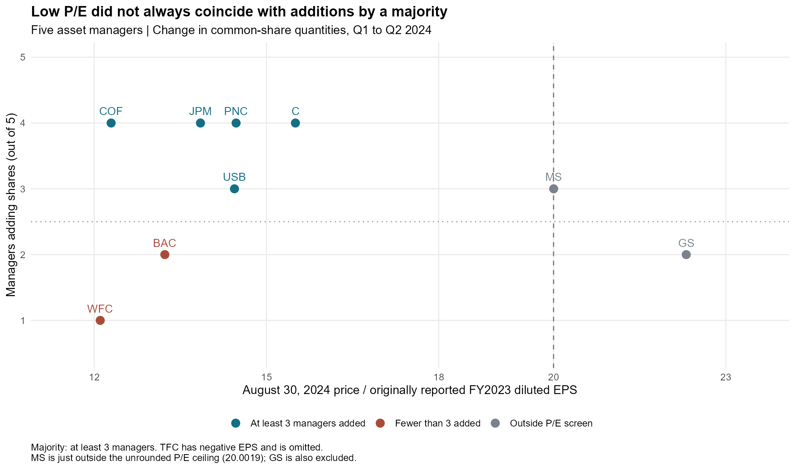
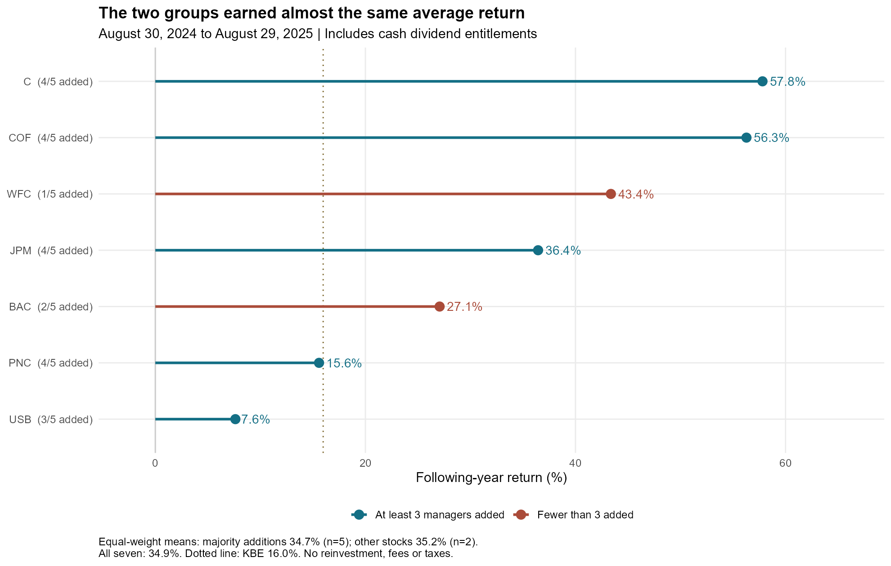

Low P/E Is a Starting Point, Not an Institutional Endorsement
Did institutional additions identify higher-returning stocks within a low-P/E bank screen?
Does a low P/E signal broader institutional buying—and does combining the two identify bank stocks with higher subsequent returns? I examine this question using a bank-stock screen in August 2024. First, I compare the number of managers increasing their holdings across the qualifying stocks. Then I compare following-year returns for stocks with broader additions, the complete low-P/E list and the stocks the additional condition excludes.
For this historical sample, the extra condition reduced seven candidates to five and left their average return almost unchanged. The individual outcomes show what the narrower list gained and missed.
Define the stock screen
I examine the ten largest directly U.S.-listed U.S. parent companies in the New York Fed’s year-end 2023 banking table, excluding TD’s unlisted U.S. subsidiary.
Using R’s rvest, I collect public holdings disclosures for Vanguard, BlackRock, State Street, FMR and Geode. I count how many increased reported common-share quantities between March and June 2024. “Broader buying” means at least three of five added. All filings were public before August 30.
Seven stocks have positive, originally reported 2023 GAAP diluted EPS and an August 30 price-to-earnings ratio no higher than 20. This annual-earnings cutoff defines the shortlist; it does not establish undervaluation. Replication details.
Does low P/E come with broader institutional buying?

Capital One and Citigroup each had four managers adding shares, compared with one for Wells Fargo and two for Bank of America. All seven had at least one manager adding, but only five met the majority condition. A low P/E alone therefore did not tell an investor whether most of these managers were increasing their positions.
The distinction creates a concrete screening decision: keep all seven low-P/E candidates, or keep only the five with broader additions? The narrower list excludes Wells Fargo and Bank of America. Comparing subsequent returns shows whether that exclusion helped in this case. The holding changes themselves record behavior, not the managers’ reasons for it.
Did broader institutional buying identify higher-returning stocks?
I compare equal-dollar purchases on August 30, 2024, held until August 29, 2025. Scraped Digrin prices and Stock Analysis dividend histories supply closing prices and cash dividends earned during that window. Dividends are not reinvested; returns precede fees and taxes.

The five-stock filtered list returned 34.7%, compared with 34.9% for the complete seven-stock list. The two excluded stocks averaged 35.2%. Selecting the broader-buying stocks therefore produced almost the same average return as keeping the original shortlist, and a slightly lower return than the excluded pair.
The filter retained Citigroup’s 57.8% gain, but also U.S. Bancorp’s 7.6% return. It discarded Wells Fargo, which returned 43.4%. The retained stocks included both the highest and lowest returns among the seven. Broader additions did not separate the stronger performers from the weaker ones in this sample.
How sensitive is that comparison?
Morgan Stanley’s unrounded multiple is 20.0019, just outside the screen. Raising the ceiling to 20.01 includes it and puts the majority group ahead, 37.1% versus 35.2%. This boundary check was added after noticing that near-cutoff stock. It shows that even the direction of the small group difference depends on the precise screen. Seven stocks in one year provide a case study, not a reliable estimate of how the condition would perform across other samples and periods.
Takeaway
Low P/E did not automatically coincide with additions by most of the five managers. Adding that condition then reduced seven candidates to five without increasing their following-year average return. In this case, excluding Wells Fargo and Bank of America on that basis did not improve the shortlist. The practical lesson is to use institutional holding changes as additional research information, rather than assume they validate a low-P/E investment: the return comparison here provides no basis for that assumption.
Source extracts, original earnings ledger, complete outcomes, sensitivity checks and offline code: README.